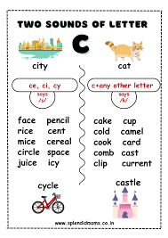
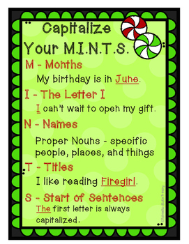
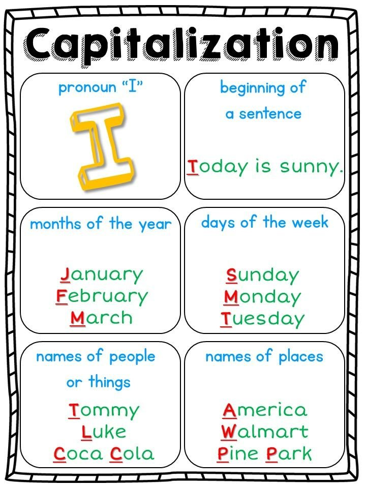

🧪 Week 8 of 35 — Unit 2: Changes in Matter
Unit 2: Changes in Matter | Dates: Oct 18 – Oct 22, 2026 | Week: 5 of 7 | Year week: 8 of 35 |
Class | Sunday | Monday | Tuesday | Wednesday | Thursday |
This week's updates / notes: | Book Fair this week — 5B @ 10:10 (Sun) · 5A @ 07:45 (Mon) Materials Needed: flour, cheese, tomato sauce, chopped veggies, oil Send home Science Fair Parent Letter Mon: GIRLS ONLY 9:40-10:30 · Tue: Book Character Day Wed: 5A P2 8:10-9:20 Science Lab with G12; 5C P3 9:05-9:55 Science Lab with G12 Thu: 5B P2 8:10-9:20 Science Lab with G12 (Abena absent) Some lessons have been transferred over from the previous week due to time. | ||||
Morning Meeting | Week #4 SEL Lesson — decide which day you prefer to do this lesson. THEME: KINDNESS 5A- Individual Activity to Whole Group Meeting 5B- One to One Enrichment 5C- Morning Worksheets | Week #4 SEL Lesson — decide which day you prefer to do this lesson. THEME: KINDNESS 5A- Individual Activity to Whole Group Meeting 5B- One to One Enrichment 5C- Morning Worksheets | Week #4 SEL Lesson — decide which day you prefer to do this lesson. THEME: KINDNESS 5A- Individual Activity to Whole Group Meeting 5B- One to One Enrichment 5C- Morning Worksheets | Week #4 SEL Lesson — decide which day you prefer to do this lesson. THEME: KINDNESS 5A- Individual Activity to Whole Group Meeting 5B- One to One Enrichment 5C- Morning Worksheets | Week #4 SEL Lesson — decide which day you prefer to do this lesson. THEME: KINDNESS 5A- Individual Activity to Whole Group Meeting 5B- One to One Enrichment 5C- Morning Worksheets |
Personal Learning Goal / SEL | PLG: Collaborator, Respectful, Communicator SEL- Kindness | PLG: Collaborator, Respectful, Communicator SEL- Kindness | PLG: Collaborator, Respectful, Communicator SEL- Kindness | PLG: Collaborator, Respectful, Communicator SEL- Kindness | PLG: Collaborator, Respectful, Communicator SEL- Kindness |
Vocabulary & Spelling — Word of the Day (G5 + G3) Routine: give the definition first (no guessing) → students share where they might use it, similar/different words. Morphology, examples/non-examples, synonyms/antonyms & more on the vocabulary cards: Vocabulary Padlet (incl. Spelling: words Mon · test Thu) | G5: sequence — A particular order in which related events or things follow each other. G3: request — To politely or formally ask for something. Unit: volcanoes — Mountains or hills with openings through which lava, rock, and gases erupt from the Earth's interior. | G5: passage — The process of moving from one place or stage to another; also a section of text. G3: method — A particular way of doing something; a systematic approach or procedure. Unit: culminate — To reach the highest point or final result after a period of development. ——— Spelling — introduce Week 8 lists (practice all week). Low (Building Spelling Skills, List 8): the, that, them, day, may, made, was, of, if, a High (Building Spelling Skills, List 8): follow, matter, summer, million, dollar, scissors, cattle, address, office, suppertime, blizzard, penny, wrapper, wallet, occurrence, village, collide, battle | G5: transition — The process of changing from one state, stage, or subject to another. G3: reveal — To make something known that was previously hidden or secret. Unit: whereas — In contrast or comparison with the fact that. | G5: era — A long and distinct period of history with particular characteristics. G3: rare — Not found or seen very often; unusually special or valuable. Unit: although — In spite of the fact that; even though. | G5: commence — To begin or start something. G3: attempt — An effort to do or achieve something, especially something difficult. Unit: supplies — Materials, equipment, or provisions needed for a particular purpose or activity. ——— |
READING | Phonics: Teach cy, ci, ce says /s/ — create an anchor chart with these soft sounds; students add words and tell you which column to place them in. How-to word-work video: YouTube  SeeSaw: Soft c — pictures only · Soft c — reading the words Guided Reading — Conflict. Materials: "The Tortoise and the Hare" (Aesop's Fable) Hook (3 min): ask, "Has anyone ever had a disagreement with a friend or sibling? How did you feel?" A few students share briefly. Teach (5 min): stories have problems called conflicts that characters face; without conflict there's no excitement. Introduce the three types: Character vs. Character, Character vs. Nature, Character vs. Self. Mentor text (5 min): read the fable aloud. "What is the conflict in this story? Who is it between?" Guide students to Character vs. Character (the tortoise and the hare competing). Rotations (stations for the week): SeeSaw: Story Elements Lesson/Test · Capitalization and Punctuation · 5 Red Capitals · Circle the Errors · Circle the Errors #2 IXL: G4 Capitalizing Names · G4 Capitalizing Days & Months · G4 Capitalizing Places · G4 Capitalizing Proper Adjectives · G4 Capitalization Review Google Classroom: KAMI WS folder Boom Cards: Capitalization · Fix Sentences Set 2 · Fix Sentences Set 1 · Fix Sentences Claude: Slides on Capitalization · Flashcards Kahoot: Story Elements #1 · Story Elements #2 RazKids, EPIC, Book Bag | Guided Reading — Conflict in fairy tales. Materials: "Cinderella" (a simplified version) Hook (3 min): "Can anyone name a favorite fairy tale?" Write a few suggestions on the board. Teach (4 min): conflicts are the problems characters face — between characters (Character vs. Character), or between a character and something else, like nature or themselves. Mentor text (6 min): read a brief retelling of "Cinderella." "What is the conflict in this story?" Guide students to Character vs. Character (Cinderella and her stepmother/stepsisters). "Could there be other conflicts?" (Character vs. Self — Cinderella's sadness; Character vs. Society — not being allowed to go to the ball.) Rotations: see Sunday's station list or the differentiation row below. | Phonics: review cy, ci, ce says /s/ — SeeSaw activity Guided Reading — Resolution. Materials: "The Ugly Duckling" by Hans Christian Andersen (simplified version) Hook (3 min): "Yesterday we learned about conflicts in stories. What happens when the problem is solved?" Guide students to the word resolution. Teach (4 min): resolution is how the conflict is solved or fixed; every conflict needs a resolution for the story to have a satisfying ending. Mentor text (6 min): read the story. "What was the conflict?" (The duckling is teased and rejected — Character vs. Character.) "How did the problem get solved?" (He grows into a beautiful swan and is accepted.) "What was the resolution?" (He finds where he truly belongs and is happy.) Rotations: see Sunday's station list or the differentiation row below. | Guided Reading — Create your own conflict & resolution. Materials: "The Lion and the Mouse" (Aesop's Fable) Hook (2 min): "Now that we've learned about conflict and resolution, it's time to create our own stories!" Teach (4 min): a story needs a conflict (problem) and a resolution (solution). Write on the board: Beginning (introduce characters), Conflict (the problem), Resolution (solving the problem). Mentor text (5 min): read the fable. "What is the conflict?" (The lion is trapped in the net — Character vs. Nature.) "How is it resolved?" (The mouse chews through the net.) Activity (6 min): students brainstorm and outline a simple story — two friends arguing (Character vs. Character) or a kid overcoming fear (Character vs. Self). It should include: Who are the characters? What is the problem? How is it solved? Rotations: see Sunday's station list or the differentiation row below. | Guided Reading: Review / catch-up. Rotations: see Sunday's station list or the differentiation row below. |
Standards | Reading Literature — CCSS RL.5.3 Compare and contrast two or more characters, settings, or events, drawing on specific details (e.g., how characters interact). EE.RL.5.3 Identify details that describe characters, settings, or events. Language — CCSS L.5.2.A Use punctuation to separate items in a series. EE.L.5.2.A Use ending punctuation when writing a sentence. Reading Foundational Skills — CCSS RF.5.3.C Use context to confirm or self-correct word recognition and understanding, rereading as necessary. EE.RF.5.3.C Use context to confirm word recognition. CCSS RF.5.3 Know and apply grade-level phonics and word-analysis skills. EE.RF.5.3 Use letter-sound knowledge and syllabication patterns to read words. Reading Informational Text — EE.RI.5.1 Identify key details that support the main idea of an informational text. Writing — CCSS W.5.2.B Develop the topic with facts, definitions, concrete details, quotations, or other information. CCSS W.5.3.C Use a variety of transitional words, phrases, and clauses to manage the sequence of events. CCSS W.5.4 Produce clear and coherent writing appropriate to task, purpose, and audience. | ||||
Assessment | SeeSaw — Complete the Pizza in a Mug writing activity. | Capitalization check: Flashcards | Informal Observations | Informal Observations | Have students list the parts of a procedure writing piece |
Differentiation | EPIC: How to Read a Recipe — discuss the elements of a recipe and point them out in the text (Introduction/Title, Materials/Ingredients, Method, Conclusion). | Use these mentor texts to talk about transitional words (link was embedded in an image in the old 25-26 plan).   Writing resources (from the 2025-26 plan):
| Adaptation: for students who need more support, provide word lists to practice with before they start creating their sentences. | Teacher should choose from the variety of above activities to best suit students' abilities. | Teacher should choose from the variety of above activities to best suit students' abilities. |
GRAMMAR (Sun & Tue) WRITING (Mon & Wed) Thu = catch-up IXL this week: Low: Choose the right end mark (G1) High: Commas with the names of places (G3) Stretch: Commas with dates and places (G5) · Commas with direct addresses (G5) | Grammar (Sun) — Question Marks & Exclamation Points OBJ: Match ? and ! to sentence types Packets — Low (K-1): K: L3.5 Question Marks, K: Review: Periods and Question Marks, G1: L2.7 Question Marks, G1: L2.8 Exclamation Points, G1: Review · Mid (2-3): G2: L2.7 Question Marks, G2: L2.8 Exclamation Points, G3: L2.7 Question Marks, G3: L2.8 Exclamation Points, G3: Review: End Marks · High (4-6): G4: L2.6 Question Marks and Exclamation Points, G4: Review: End Marks, G5: L2.10 Question Marks, G5: L2.11 Exclamation Points, G6: L2.8 Question Marks, G6: L2.9 Exclamation Points G5-G6: formal writing uses fewer exclamation marks. Grammar anchor charts / resources (from the 2025-26 plan): Grammar: MINTS- Slides for Capitalization with Practice   | Writing — Add Title/Goal + Materials list + setup diagram Mini-lesson on writing a Goal ("This experiment shows...") and a precise Materials list with amounts; students revise their draft and add a labelled setup diagram. Grammar link: capitalization — title and proper nouns. TWR: because for the Goal — "We do this experiment because we want to find out ___." Every student writes the Goal as one because-sentence; expand with what? (materials) if ready. Resources: Procedural Texts PPT (Padlet) — word bank: measurement/amount words IXL: Descriptive details (G2) — Descriptive details (G3) — Stretch: Order adjectives (G4) — General to specific (G5) | Grammar (Tue) — Commas — Dates, Cities & States OBJ: Place commas correctly in dates and city/state combinations Packets — Low (K-1): K: Review: Periods and Question Marks (teacher intro comma concept), G1: L2.9 Commas with Dates, G1: L2.10 Commas with Cities and States · Mid (2-3): G2: L2.10 Commas — Dates, Cities, and States, G3: L2.9 Commas — Dates, Cities, States, and Addresses · High (4-6): G4: L2.7 Commas — Dates, Cities, and States, G5: L2.14 Commas — Personal Letters (dates and addresses), G6: L2.12 Commas — Personal and Business Letters Science journals use dates daily. | Writing — Conclusion + edit for clarity Model a Conclusion that tells the reader what to notice or remember, plus a pro-tip and safety note. Students add theirs, edit against the rubric (capitals, full stops, command verbs, step order), and finish labels/illustrations. Grammar link: end marks and capitals. TWR: but/so for the Conclusion — "We thought ___, but ___." and "The ___ changed, so ___." — real scientific thinking in two conjunctions. Resources: How to Wash a Woolly Mammoth — model ending (Padlet) — co-built rubric Writing anchor charts / resources (from the 2025-26 plan): Review the week and use the powerpoint below as another form of review.
| Catch-up day — reteach or extend this week's grammar and writing; finish unfinished drafts; assign this week's IXL practice (links in the left column: Low = reteach, High = consolidate, Stretch = extension). |
MATH Pacing W07 · B2 Addition, subtraction, multiplication and division W03–W08 | |||||
Objectives / Standards | Objective: Students will understand the structure of calendars and identify days, weeks, and months. CCSS 4.MD.A.2 — Use the four operations to solve word problems involving distances, intervals of time, liquid volumes, masses of objects, and money. | Objective: Students will use a calendar to find specific dates, count intervals between dates, and solve simple word problems. CCSS 4.OA.C.5 — Generate and analyze patterns (e.g., day sequences or recurring events in calendars). | Objective: Students will read analog and digital clocks, understand hours and minutes, and convert between 12-hour and 24-hour time formats. CCSS 4.MD.A.1 — Know relative sizes of measurement units within one system (hr, min, sec); express measurements in a larger unit in terms of a smaller unit. | Objective: Students will understand elapsed time and time zones and solve time-related word problems while reviewing calendar concepts. CCSS 4.MD.A.2 — Use the four operations to solve word problems involving intervals of time and other measures. | IXL Formative Quiz |
Differentiation | Each lesson includes partner practice, common misconceptions, independent practice, and challenge questions for differentiation. | Each lesson includes partner practice, common misconceptions, independent practice, and challenge questions for differentiation. | Each lesson includes partner practice, common misconceptions, independent practice, and challenge questions for differentiation. | Each lesson includes partner practice, common misconceptions, independent practice, and challenge questions for differentiation. | Each lesson includes partner practice, common misconceptions, independent practice, and challenge questions for differentiation. |
EXPLORER 3-day plan (Mon–Wed) Test & Collect Data IXL this week: Low: Read a Thermometer (Gr 3, continue) · High: Collect & Graph Temperature Data (Gr 4, continue) Stretch: Collect & Graph Temperature Data (Gr 5) · Predict Heat Flow (Gr 4) | Review / catch-up — revisit last week's Explorer learning; finish unfinished investigations or SeeSaw posts; preview this week's topic. | Mon · Build & Run: Trial 1 1. Review — Recall the approved plan: question, hypothesis, materials, procedure. 2. Set up — Students bring in and lay out their materials; check off against their materials list. 3. Run Trial 1 — Follow the written procedure exactly — this is the fair test in action. 4. Record — Log results for Trial 1 in the data table on the Science Fair template. 5. Safety check — Review lab safety rules before handling any materials. Objective: Can follow a written procedure step-by-step and record data from a single trial. Assessment: Data for Trial 1 is recorded in the data table. Differentiation: Record with teacher support / with a partner / independently. | Tue · Repeat for Fairness: Trials 2 & 3 1. Review — Why do scientists repeat a test more than once? (Reliability — one result could be a fluke.) 2. Run Trial 2 — Repeat the exact same procedure; record results. 3. Run Trial 3 — Repeat again; record results. 4. Compare — Do all 3 trials agree? If one is very different, discuss why — was something not kept the same? Objective: Can repeat a fair test 3 times and record consistent data. Assessment: Data for Trials 2 and 3 recorded; can explain why repeating matters. Differentiation: Repeat with step-by-step teacher cues / with a checklist / independently. | Wed · Analyze & Conclude: Results, Graphs & Conclusions 1. Review — Look back at data from all 3 trials. 2. Graph — Turn the data table into a simple bar or line graph (title, labels, units). 3. Write — Draft the conclusion: Was the hypothesis correct? What did the data show? 4. Research — Look up why the result happened scientifically (e.g. “Why does styrofoam insulate better than glass?”) using Epic or a teacher-approved website; add one sentence connecting the conclusion to the science. 5. Science-fair connection — Remind students this mirrors the fair-test cycle from Week 3: question → hypothesis → evidence → conclusion. Objective: Can turn data into a graph and write a conclusion that connects results to scientific reasoning. Assessment: Conclusion states whether the hypothesis was correct and explains why, using research. Differentiation: Complete a conclusion frame with support / with some support / write independently. | Review / catch-up — consolidate Mon–Wed learning; complete recordings/reflections; reteach or extend as needed. |
Closing Circle (SELG) | |||||